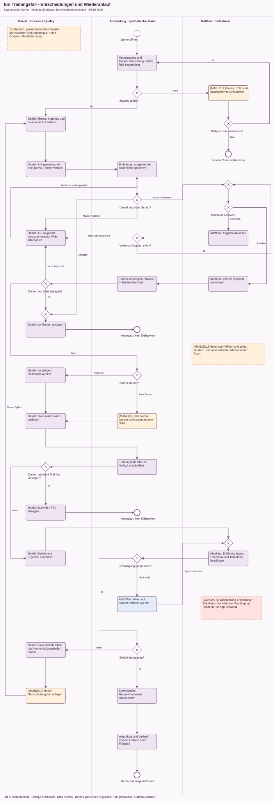
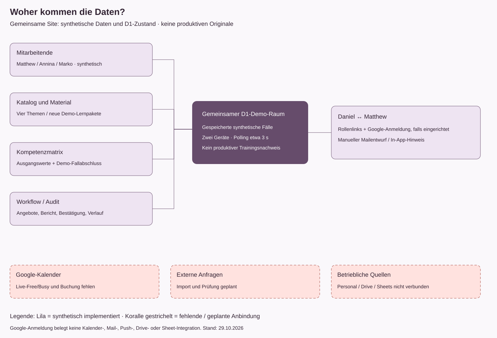

Daniel und Matthew arbeiten im gleichen synthetischen Raum. Diese Darstellungen erklären Ablauf, Ausnahmen und Quellen; sie belegen keine produktive Google-Integration.
Lila: implementiert. Orange: manuell. Blau: offen. Koralle gestrichelt: geplant. Keine automatische Mail, kein Push, keine Kalenderbuchung.


Das primäre BPMN-Modell verbindet den gesamten Trainingsfall mit Entscheidungen und Rückwegen in drei Rollenbahnen. Acht Szenarien als Anhang · BPMN-Anhang. Native ADONIS-Importprüfung steht aus. Stand: 29.10.2026.